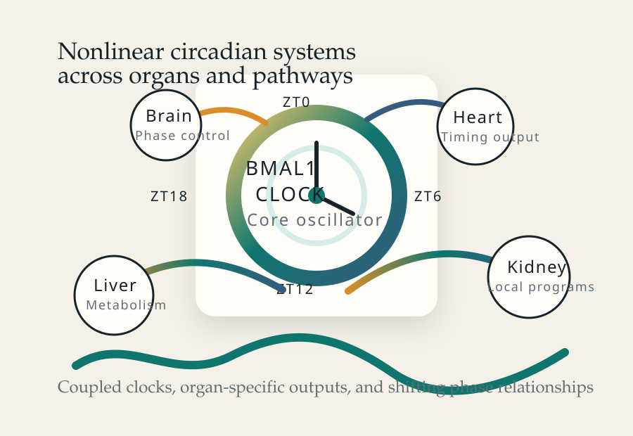

Published research program
Hogenesch Lab
Circadian Biology • Systems Genomics • Circadian Medicine
The Hogenesch Lab studies biological timing across molecular mechanisms, genome-scale transcription, and medicine. The work links core clock architecture to tissue-scale rhythmic programs and to translational questions about when physiology, disease processes, and therapies are most sensitive to time of day.
Affiliations


